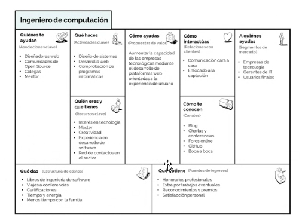

Un CV debe tener los siguientes apartados:
- Nombre y apellidos.
- Profesión.
- Contactos: email y móvil mínimo.
- Trayectoria o experiencia profesional
- Estudios.
- Logros.
- Idiomas.
- Habilidades Hard y Soft.
- Los Hobbies pueden ir en Habilidades Soft o en Logros.
A través de ChatGPT para cada oferta o puesto de trabajo.
Para hacer una buena carta de presentación hay que tener en cuenta dos puntos importantes:
1. Explicar por qué eres ideal para el puesto.
2. Enfocar cómo puedes contribuir a la empresa.
Se recomienda la realización de tu propia tarjeta de empresa para quién te contrate, pueda tener una toma de contacto física tuya y así establecer la relación de interés más fácil.

Dí a ChatGPT que te simule entrevistas acorde al puesto de trabajo en cuestión y la filosofía de la empresa, proporcionándote preguntas comunes y complejas, analizando tus respuestas y sugiriéndote mejoras y, aumentando tu confianza y tu precisión.
Cómo persuadir en la entrevista con Storyselling:
Caso real de un Storyselling:
1. Búsqueda general por sector:
- Prompt: Estoy buscando ofertas de trabajo en el sector de marketing digital en Madrid. ¿Podrías sugerirme portales de empleo y las palabras clave que debería usar?
2. Ofertas adaptadas a tu perfil:
- Prompt: Tengo 10 años de experiencia en Recursos Humanos y estoy buscando ofertas relacionadas con la gestión de talento o desarrollo organizacional. ¿Podrías recomendarme dónde buscar las mejores oportunidades?
3. Sugerencias de palabras clave:
- Prompt: Quiero mejorar mi búsqueda laboral en el área de ventas internacionales. ¿Qué palabras clave específicas debería incluir en mis búsquedas para encontrar mejores resultados?
4. Exploración de nuevas oportunidades:
- Prompt: Me gustaría cambiar de carrera hacia el área de consultoría en Recursos Humanos. ¿Puedes darme ideas sobre roles similares que podrían beneficiarse de mi experiencia en RRHH?
5. Filtrar oportunidades por salario o tipo de contrato:
- Prompt: Estoy buscando ofertas de trabajo en el área de gestión de proyectos con un salario superior a 40.000 euros anuales. ¿Me puedes ayudar a definir una mejor estrategia de búsqueda?
6. Ofertas internacionales:
- Prompt: Me interesa buscar trabajo en el extranjero, especialmente en Alemania y Francia. ¿Cuáles son los mejores portales para encontrar este tipo de trabajo?
7. Ofertas según la industria:
- Prompt: Estoy interesado en encontrar empleo en el sector tecnológico, especialmente en startups de inteligencia artificial. ¿Dónde debería buscar?
8. Búsqueda de alto nivel para perfiles junior y entry-level:
- Prompt: Estoy terminando mis estudios y quiero iniciar mi carrera en SAP. Estoy buscando mi primer trabajo en el área. ¿Dónde debería buscar?
9. Búsqueda personalizada por horario o flexibilidad:
- Prompt: Busco un trabajo que me permita tener un horario flexible para compaginar con otros proyectos. ¿En qué portales podría encontrar más ofertas de este tipo?
10. Recomendación de portales para empleo especializado:
- Prompt: ¿Puedes recomendarme portales de empleo especializados en ofertas de trabajo en el área de orientación laboral y formación profesional?
1. Carta de presentación general:
- Prompt: Necesito una carta de presentación para una posición de [título del puesto] en [nombre de la empresa]. Tengo experiencia en [detallar experiencia relevante] y habilidades en [listar habilidades]. ¿Puedes ayudarme a redactarla?
2. Carta para un puesto específico:
- Prompt: Quiero aplicar para el puesto de [título del puesto] en [nombre de la empresa]. En mi trayectoria destaco [logros específicos]. ¿Me puedes ayudar a redactar una carta de presentación que enfatice estos puntos?
3. Carta para un cambio de carrera:
- Prompt: Estoy buscando cambiar de carrera hacia [nuevo sector o puesto] y he encontrado una oferta en [nombre de la empresa]. Mi experiencia en [sector anterior] me ha proporcionado habilidades que pueden ser útiles. ¿Puedes ayudarme a escribir una carta de presentación convincente?
4. Carta personalizada según la empresa:
- Prompt: Quiero escribir una carta de presentación para [nombre de la empresa] porque me atrae [mencionar algo específico sobre la empresa, como sus valores o proyectos]. Tengo [detallar experiencia] que me hace un buen candidato. ¿Me puedes ayudar a redactar esta carta?
5. Carta que destaca habilidades blandas:
- Prompt: Estoy aplicando a un puesto de [título del puesto] y quiero que mi carta de presentación destaque mis habilidades blandas, como [listar habilidades blandas]. ¿Puedes ayudarme a estructurar la carta para que esto quede claro?
1. Simulación de preguntas comunes:
- Prompt: Estoy preparándome para una entrevista para el puesto de [título del puesto]. ¿Puedes prepararme con una lista de preguntas comunes y cómo afrontarlas?
2. Mejorar respuestas a preguntas de comportamiento:
- Prompt: Necesito ayuda para responder preguntas de comportamiento en mi próxima entrevista. ¿Puedes darme ejemplos de preguntas comunes en este estilo y ayudarme a estructurar buenas respuestas?
3. Preparación para preguntas sobre habilidades específicas:
- Prompt: Voy a entrevistarme para un puesto de [título del puesto] que requiere habilidades específicas. ¿Qué preguntas podrían hacerme relacionadas con estas habilidades y cómo debería responderlas?
4. Preguntas para hacer al entrevistador:
- Prompt: Quiero preparar algunas preguntas para hacerle al entrevistador en mi próxima entrevista para el puesto de [título del puesto] en [nombre de la empresa]. ¿Qué preguntas consideras importantes y apropiadas para esta situación?
5. Consejos para manejar la ansiedad antes de la entrevista:
- Prompt: Siento un poco de ansiedad antes de mi entrevista para el puesto de [título del puesto]. ¿Puedes darme consejos sobre cómo manejar los nervios y afrontar la situación con confianza?
En primer lugar, dividir las habilidades en dos:
1. Habilidades-Hard: son las enseñables o las que son fáciles de cuantificar, como los conocimientos y las herramientas técnicas adquiridas.
2. Habilidades-Soft: son las conocidas como habilidades personales
o habilidades interpersonales
, como la comunicación, la flexibilidad,
el liderazgo, el trabajo en equipo y la gestión del tiempo.
En segundo lugar, realizar el modelo CANVAS para vender
tu perfil a las empresas:
